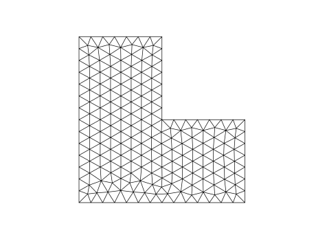
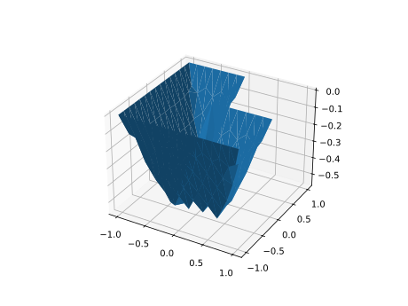
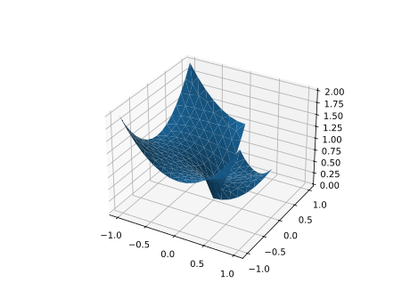

MultiGridBarrier 1.1.0
MultiGridBarrier is a Julia module for solving nonlinear convex optimization problems in function spaces, such as p-Laplace problems. When regularity conditions are satisfied, the solvers are quasi-optimal.
The package features finite element and spectral discretizations in 1d, 2d, and 3d, and two ways in:
- the high-level JuMP front end — state the variational problem with the standard JuMP macros and let
optimize!lower it to the multigrid interior-point solver; and - the low-level native API — build the geometry, hierarchy, and problem objects yourself, for full control over meshes, connectivity, devices, and constraints.
A short software paper describing the package is available as a PDF.
Meshes from Gmsh
Real-world geometry — CAD shapes, holes, local refinement, named boundary parts — comes from Gmsh, via an auto-loading extension. gmsh_import converts the current Gmsh model (or a .msh/.geo file) into a Geometry, and Gmsh physical groups into named node sets that plug directly into Dirichlet conditions and the JuMP front end's On regions. Triangles import as P1/P2, quadrilaterals and hexahedra at any order, straight or curved. Here is an L-shaped domain, with its boundary named as a physical group:
using MultiGridBarrier, JuMP, PyPlot
using Gmsh: gmsh
gmsh.initialize()
gmsh.option.setNumber("General.Terminal", 0)
sq = gmsh.model.occ.addRectangle(-1.0, -1.0, 0.0, 2.0, 2.0)
cut = gmsh.model.occ.addRectangle(0.0, 0.0, 0.0, 1.0, 1.0)
gmsh.model.occ.cut([(2, sq)], [(2, cut)])
gmsh.model.occ.synchronize()
gmsh.model.addPhysicalGroup(1, [t for (d, t) in gmsh.model.getEntities(1)], -1, "boundary")
gmsh.option.setNumber("Mesh.MeshSizeMax", 0.15)
gmsh.model.mesh.generate(2)
gm = gmsh_import()
gmsh.finalize()
X = gm.geometry.x # (3, N, 2): the triangle corners
triplot(vec(X[:, :, 1]), vec(X[:, :, 2]),
triangles = collect(reshape(0:3*size(X, 2)-1, 3, :)'),
color = "k", linewidth = 0.7)
axis("equal"); axis("off")
The mesh itself is drawn with stock matplotlib (triplot) straight off the coordinate tensor gm.geometry.x — loading PyPlot both enables the package's plotting extension and leaves the full matplotlib API at hand. The Gmsh page covers physical groups and mixed boundary conditions, curved high-order import, and the extension's API reference.
JuMP: the high-level front end
The JuMP front end is a package extension that loads automatically once both MultiGridBarrier and JuMP are imported. An MGBModel is a JuMP model over a fixed discretization: @variable, @constraint, @objective, and the usual accessors work unchanged, and optimize! lowers the model directly to the multigrid barrier method — no MOI model is ever built.
As a taste, here is an $\infty$-Laplacian on the L-shaped mesh we just built. The problem
\[\min_u \; \int_\Omega 10\,u \; dx \;+\; |\Omega| \cdot \|\nabla u\|_{L^\infty(\Omega)}^2, \qquad u = 0 \text{ on } \partial\Omega,\]
becomes conic with a single uniform slack: one scalar s constrained by s ≥ ‖∇u(x)‖² at every node is exactly s ≥ ‖∇u‖²_{L^∞} — and the Dirichlet condition lands on the Gmsh-named "boundary" region.
m = MGBModel(gm.geometry)
set_silent(m)
@variable(m, u)
@variable(m, s, Uniform()) # a single scalar dof: the L^∞ epigraph
set_start(s, 100.0)
@constraint(m, u == Coef(m, 0.0), On(gm.regions["boundary"]))
@constraint(m, [deriv(u, :dx); deriv(u, :dy); s] in EpiPower(2.0))
@objective(m, Min, integral(Coef(m, 10.0) * u + s))
optimize!(m)
plot(mgb_solution(m))
Plotting solutions is itself an extension: loading PyPlot alongside the package extends PyPlot.plot to every solution and geometry type — matplotlib in 1d/2d, PyVista in 3d — see Plotting. And the JuMP layer is only the front door: everything it does lowers to the low-level API below (mgb_solution(m) returns the same solution object that the native solver produces), so the two APIs interoperate freely. The JuMP page has the modeling guide — the nodal data model, regions, variable kinds — and the JuMP API reference.
The low-level API
Under both front ends sits the same native pipeline — each step a plain function returning a plain object. A Geometry (from Gmsh as here, or from the built-in mesh constructors — see the API Guide) gets a multigrid hierarchy, the hierarchy an assembled convex problem, and the problem a solution; this solves a p-Laplace problem on the same L-shaped mesh:
hierarchy = amg(gm.geometry) # 1. an algebraic multigrid hierarchy
problem = assemble(hierarchy; p = 1.5) # 2. an assembled convex problem
solution = mgb_solve(problem; verbose = false) # 3. the multigrid barrier solve
plot(solution)
This is where the package's full breadth lives: tensor-product $Q_k$ and simplicial elements, spectral discretizations, embedded manifolds, slit domains via explicit connectivity, time-dependent (parabolic) problems, GPU solves (autodetected once CUDA is loaded — no code changes), custom convex constraints, and a Zoo of ready-made variational problems. The API Guide is the guided tour; the API reference has the docstrings; PyAMG documents the optional multigrid coarsenings.
Bibliography
This package implements and builds on a growing line of work on barrier methods for convex problems in function spaces. If you use it in your research, please cite the paper(s) most relevant to your work:
- S. Loisel, The Algebraic Multi-Grid-Barrier Method for Solving p-Laplace and Other Convex Optimization Problems, Proceedings of the 29th International Conference on Domain Decomposition Methods, 2026. online PDF
- S. Loisel, The spectral barrier method to solve analytic convex optimization problems in function spaces, Numerische Mathematik 158(1):281–302, 2026. doi:10.1007/s00211-025-01508-0
- S. Loisel, Efficient algorithms for solving the p-Laplacian in polynomial time, Numerische Mathematik 146(2):369–400, 2020. doi:10.1007/s00211-020-01141-z